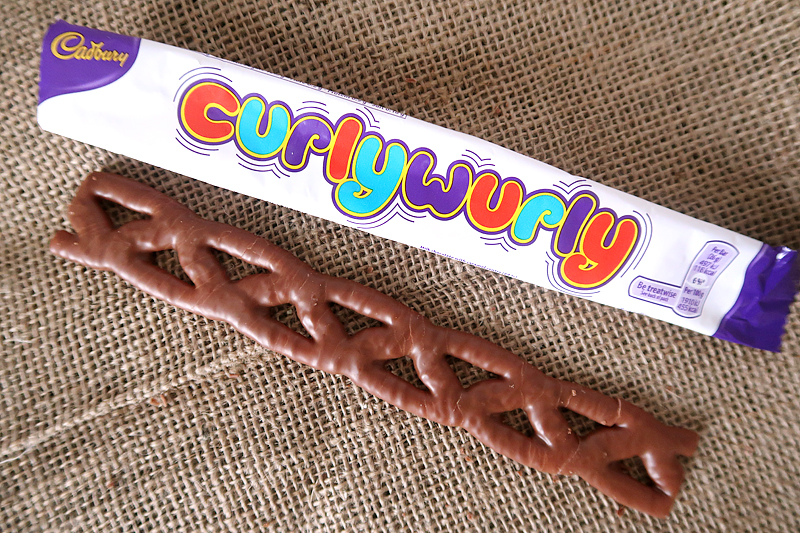

If you’ve lived in Australia or Britain you’ve probably come across this beauty. Chewy, tasty, and featuring an awesome lattice shape it’s a pretty awesome chocolate bar friends! 3.5 stars.
But this blog’s about AppSec not rating choccies so let’s get back on track. While chewing on one of these goodies I thought, hey, why not write about curl, a program that I’ve found absolutely essential for getting my automated DevSecOps pipelines up and running.
For those who don’t know curl, here’s the description straight off the manpage
curl is a tool to transfer data from or to a server, using one of the supported protocols. The command is designed to work without user interaction. curl offers a busload of useful tricks like proxy support, user authentication, FTP upload, HTTP post, SSL connections, cookies, file transfer resume, Metalink, and more!
Yep, a busload. That’s a lot!
Simple Examples
It’s a fairly simple to use tool.
curl -X GET https://www.colecornford.com
<!DOCTYPE html>
<html lang="en" itemscope itemtype="http://schema.org/WebPage">
<head>
...
<meta charset="utf-8" />Just send a get request to my website, and pulled the homepage down. That doesn’t seem terribly useful so far, but let’s modify it a bit more.
curl -H "Range: bytes=301-308" -X GET https://www.colecornford.com
CornfordLittle vain i guess there. How about downloading a file from another location?
curl -o stoleYaBirb.jpeg https://www.colecornford.com/img/birb.jpeg
% Total % Received % Xferd Average Speed Time Time Time Current
Dload Upload Total Spent Left Speed
0 0 0 0 0 0 0 0 --:--:-- --:--:-- -- 0 0 0 0 0 0 0 0 --:--:-- --:--:-- --100 187k 100 187k 0 0 589k 0 --:--:-- --:--:-- --:--:-- 587kThis time I’m querying the GitHub API about what repositories exist under my Github Account, starting with the oldest one, and parsing it into a pretty format with jq.
curl -X GET https://api.github.com/users/colecornford/repos?desc | jq --slurp '.'
[
[
{
"id": 159920805,
"node_id": "MDEwOlJlcG9zaXRvcnkxNTk5MjA4MDU=",
"name": "advent-challenge-2018",
"full_name": "colecornford/advent-challenge-2018",
"private": false,
"owner":
...
}
]
]Anyway, with these short examples you can see that it has some pretty good utility overall, and i barely scratched the surface.
Where curl really shines is in combination with other command line tools like jq for JSON parsing, sed/awk/grep/cut for string manipulation, or just for chaining all these together for automating entire processes, more on that later.
cool coeurl?
These are simplistic examples of what you can do with curl. Now, if you consider that companies are focussed on developing robust and feature-rich API gateways as the default method for interacting with applications, you can really imagine some great integrations starting to pop up just by using curl to network between some of these.
Where this is most relevant in the security space is automation. We are in a place where we absolutely need to automate as much menial work as possible so our talented security staff can focus on consulting and technical assessment, not auditing logs or manually running tools.
Take these as a few use cases where learning curl can start to relieve your staff of manual work:
Report Generation. What if instead of using excel or user interfaces, you grabbed the data from your defect management systems like JIRA, Remedy, DefectDojo, or whatever else you use and set it up to automatically give a daily report to your management team?
Automated Security Scans. Instead of manually running a Static Analysis tool like Brakeman, you automate the process and then push the results to your defect management system like DefectDojo? Go one step further, don’t just run tools on a schedule, use curl to poll for new commits to Gitlab or Bitbucket and do real-time scanning!
Log Collection and Analysis. Grab all the web logs from every server! Pull them together and filter on known evil. Go huge!
Quick Troubleshooting!
Okay, so I hope I’ve sold you on curl. There are definitely more specialised aggregation platforms, tools, and services but this one is good because of it’s versatility and availability. It’s ready to go in most DevOps installations, or at least an apt-get away.
One last thing, I do know that curl can be a bit finicky when you’re starting to use it, so here are a few ways to deal with the most common curl errors I see.
Implicit v Explicit HTTP Methods
curl by default will try to be smart enough to guess what you’re trying to do. ie, if you use https:// it’ll try a POST request. One of the bigger issues in software reliability stems from this. Programs that try to guess what the programmer intended will inevitably make mistakes. Be explicit when you have the option. It’s a big part of why people are using TypeScript.
Lesson: Use the -X flag to be explicit what HTTP method you are using.
Quotation Marks Suck
curl is super fiddly with quotation marks, especially if you are bringing bash parameters in to the mix. Here’s the cliffnotes:
- Single Quotes: String Literal everything between them, use sparingly.
- Double Quotes: Normally fine for parameters with spaces.
- Escaping: \” is totally fine if you need a quotation mark as part of a string eg: a description or an actual quote
$var=https://www.colecornford.com
curl -X GET '$var'
curl: (6) Could not resolve host: $var
curl -X GET "$var"
<!DOCTYPE html>
<html lang="en" itemscope itemtype="http://schema.org/WebPage">
<head>
<meta charset="utf-8" />
<meta http-equiv="X-UA-Compatible" content="IE=edge">
<meta name="viewport" content="width=device-width, initial-scale=1.0, maximum-scale=1.0">
<title>Cole Cornford - Cole Cornford</title>Lesson: Pay LOTS of attention to which type of quotation marks you use. Echo is your friend.
-k or –insecure can help
Whenever you see a script with -k or –insecure, please think about why it needs to be insecure. Disabling certificate verification will help resolve connection errors but should be a stopgap solution while you sort out the certs or get risk acceptance.
Lesson: -k will increase your risk exposure, so don’t become reliant on it. Learn certificate validation and be secure if you can!
curl HTTPS Unsupported Protocol
This happens for a HEAP of reasons, all of which have to do with the protocol being malformed in some manner. The most common ways i see it being malformed are:
curl -X GET " https://www.colecornford.com"Space in front of the https protocol will cause an invalid protocol when the curl command is executed.
$var="https://www.colecornford.com"
curl -X GET $varThis is harder to spot, it looks legitimate. The issue is the curl script ends up with the Quotation Marks included as part of the protocol. “https:// is not a valid protocol. This one is a an absolute headscratcher and looks innocuous, especially if you are using the echo command for debugging.
curl -X GET 'https://www.colecornford.com'Single quotes can break curl on windows, just upgrade to double quotes!
Lesson: Remember to review how your curl command is being constructed from your parameters, especially in regards to spaces and quotes.
Thanks for reading friends, will be writing about information overload for presentations and how to address that, as well as about some of our favourite modern development frameworks, catch you all next time!
I’ll be attending Bsides Canberra next week, see you all there!